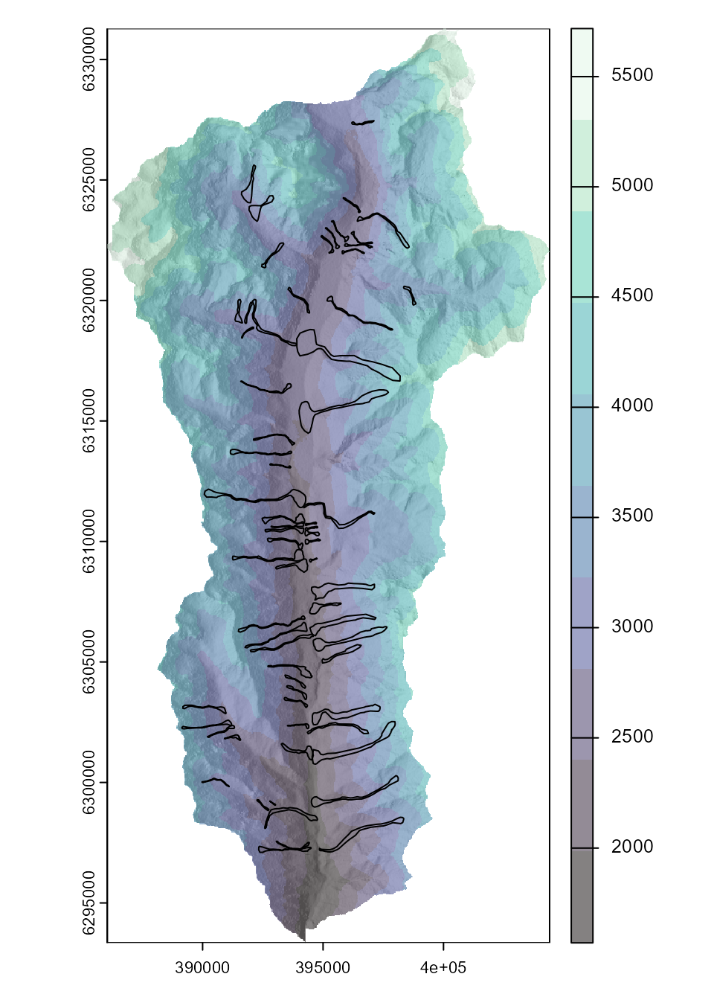

Parallel computing with runoutSIM
Jason Goetz
2025-10-16
Source:vignettes/runoutSIM_parallelization.Rmd
runoutSIM_parallelization.RmdIntroduction
This vignette demonstrates how to use parallel
computing to speed up random walk runout simulations from
multiple source cells using the runoutSIM
package. We’ll run an example that works on Windows
machines, using base R’s parallel package with
PSOCK clusters. This vignette will show how to:
Prepare source data for parallel processing
Use PSOCK clusters to distribute simulations across multiple cores
Efficiently simulate runout from multiple sources using
runoutSIM
Loading packages and sample debris flow data
We’ll begin by loading the required packages and reading a digital elevation model (DEM) and debris flow source points.
# load packages
library(runoutSIM)
library(terra)
#> Warning: package 'terra' was built under R version 4.4.3
#> terra 1.8.54
library(sf)
#> Warning: package 'sf' was built under R version 4.4.3
#> Linking to GEOS 3.13.0, GDAL 3.10.1, PROJ 9.5.1; sf_use_s2() is TRUE
# Load digital elevation model (DEM)
dem <- rast("C:/GitProjects/runoutSIM/Data/elev_fillsinks_WangLiu.tif")
# Compute hillshade for visualization
slope <- terrain(dem, "slope", unit="radians")
aspect <- terrain(dem, "aspect", unit="radians")
hill <- round(shade(slope, aspect, 40, 270, normalize = TRUE))
# Load debris flow runout source points and polygons
source_points <- st_read("C:/GitProjects/runoutSIM/Data/debris_flow_source_points.shp")
#> Reading layer `debris_flow_source_points' from data source
#> `C:\GitProjects\runoutSIM\Data\debris_flow_source_points.shp'
#> using driver `ESRI Shapefile'
#> Simple feature collection with 73 features and 1 field
#> Geometry type: POINT
#> Dimension: XY
#> Bounding box: xmin: 389175.6 ymin: 6293926 xmax: 398788.6 ymax: 6327439
#> Projected CRS: WGS 84 / UTM zone 19S
runout_polygons <- st_read("C:/GitProjects/runoutSIM/Data/debris_flow_runout_polygons.shp")
#> Reading layer `debris_flow_runout_polygons' from data source
#> `C:\GitProjects\runoutSIM\Data\debris_flow_runout_polygons.shp'
#> using driver `ESRI Shapefile'
#> Simple feature collection with 73 features and 1 field
#> Geometry type: MULTIPOLYGON
#> Dimension: XY
#> Bounding box: xmin: 389139.1 ymin: 6293864 xmax: 398852.9 ymax: 6327455
#> Projected CRS: WGS 84 / UTM zone 19S
# Plot input data
plot(hill, col=grey(150:255/255), legend=FALSE,
mar=c(2,2,1,4))
plot(dem, col=viridis::mako(10), alpha = .5, add = TRUE)
plot(st_geometry(runout_polygons), add = TRUE)
# Get coordinates of source points to create a source list object
source_l <- makeSourceList(source_points)
Running simulations in parallel
We now parallelize the simulations using parLapply().
Before doing so, we wrap the DEM to make it
transferable across cluster nodes, and load required
libraries on each worker.
library(parallel)
# Define number of cores to use
n_cores <- detectCores() -2
# Pack the DEM so it can be passed over a serialized connection
packed_dem <- wrap(dem)
# Create parallel loop
cl <- makeCluster(n_cores, type = "PSOCK") # Open clusters
# Export the packed DEM to each node
clusterExport(cl, varlist = c("packed_dem"))
# Load required packages to each cluster
clusterEvalQ(cl, {
library(terra)
library(runoutSIM)
})
# Compute multiple runout simulations from source cells
multi_sim_runs <- parLapply(cl, source_l, function(x) {
runoutSim(dem = unwrap(packed_dem), xy = x,
mu = 0.08,
md = 40,
slp_thresh = 40,
exp_div = 3,
per_fct = 1.9,
walks = 1000)
})
stopCluster(cl) Visualize simulation results
After the simulations are complete, we can convert the output list of simulation paths to raster layers for visualization or analysis.
# Coerce results to a raster
trav_freq <- walksToRaster(multi_sim_runs, method = "freq", dem)
vel_ms <- velocityToRaster(multi_sim_runs, dem, method = "max")
trav_prob <- walksToRaster(multi_sim_runs, method = "max_cdf_prob", dem)
# Plot random walks from mulitple source cells
par(mfrow = c(1,3))
plot(hill, col=grey(150:255/255), legend=FALSE, mar=c(2,2,1,4),
main = "Traverse frequency")
plot(trav_freq, add = TRUE, alpha = 0.7)
plot(hill, col=grey(150:255/255), legend=FALSE, mar=c(2,2,1,4),
main = "Traverse probability (max.)")
plot(trav_prob, add = TRUE, alpha = 0.7)
plot(hill, col=grey(150:255/255), legend=FALSE, mar=c(2,2,1,4),
main = "Velocity (m/s)")
plot(vel_ms, col = map.pal("plasma"), add = TRUE, alpha = 0.7)